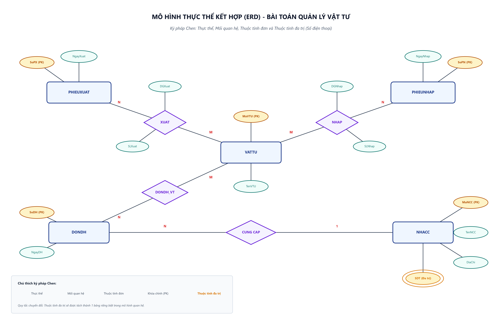
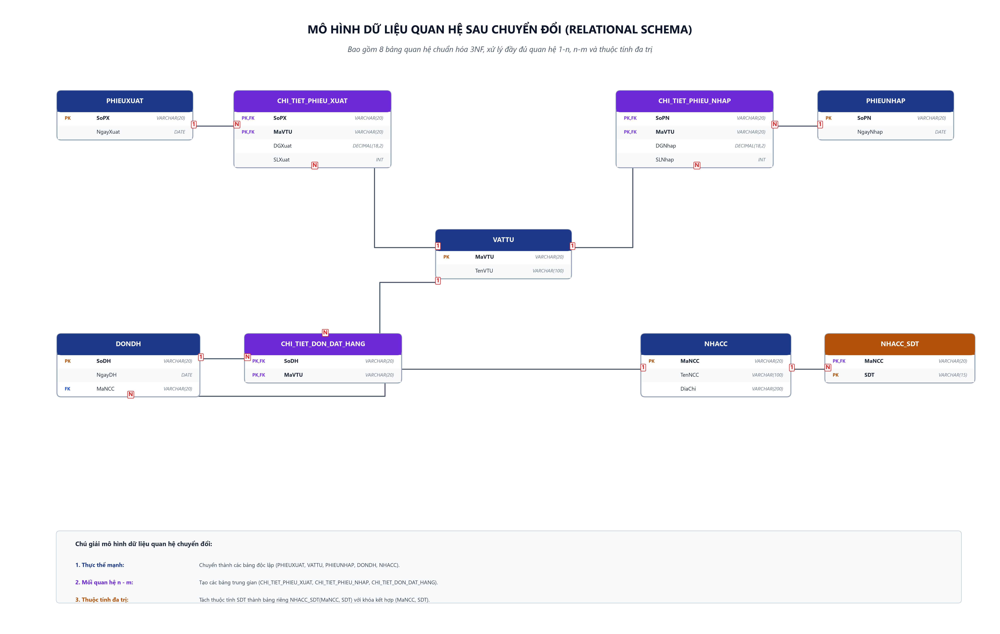

Chuyển đổi ERD sang mô hình quan hệ
Phân tích quy trình 4 bước chuyển đổi mô hình thực thể kết hợp (ERD) sang mô hình dữ liệu quan hệ, xử lý quan hệ 1-n, quan hệ n-m và thuộc tính đa trị.
1. Hình ảnh Sơ đồ ERD & Lược đồ Quan hệ
Sơ đồ ERD đầu vào (Ký pháp Chen)

Hình 1: Mô hình thực thể kết hợp ERD bài toán Quản lý vật tư
Xem ảnh kích thước gốc (300 DPI)
Lược đồ Cơ sở dữ liệu Quan hệ sau chuyển đổi (3NF)

Hình 2: Mô hình dữ liệu quan hệ gồm 8 bảng với các khóa chính và khóa ngoại
Xem ảnh kích thước gốc (300 DPI)

2. Phân tích chi tiết quy trình 4 bước chuyển đổi
Bước 1: Xác định các thực thể có trong mô hình ERD
Mô hình ERD bao gồm 5 thực thể chính:
- PHIEUXUAT: Thuộc tính khóa
SoPX, thuộc tính mô tảNgayXuat. - VATTU: Thuộc tính khóa
MaVTU, thuộc tính mô tảTenVTU. - PHIEUNHAP: Thuộc tính khóa
SoPN, thuộc tính mô tảNgayNhap. - DONDH: Thuộc tính khóa
SoDH, thuộc tính mô tảNgayDH. - NHACC: Thuộc tính khóa
MaNCC, thuộc tính mô tảTenNCC,DiaChi, và thuộc tính đa trịSDT.
Bước 2: Xác định các mối quan hệ (1 - 1, 1 - n, n - m)
-
Mối quan hệ 1 - n (NHACC CUNG CẤP DONDH):
Một nhà cung cấp có thể cung cấp nhiều đơn đặt hàng (1 - n). Theo quy tắc chuyển đổi, khóa chínhMaNCCcủa thực thể một (NHACC) được đưa vào thực thể nhiều (DONDH) làm khóa ngoại. -
Mối quan hệ n - m (PHIEUXUAT XUẤT VATTU):
Một phiếu xuất chứa nhiều vật tư, một vật tư có thể xuất trong nhiều phiếu xuất (n - m). Mối quan hệ có các thuộc tính kết hợp:DGXuat,SLXuat.
Sinh ra bảng trung gian:CHI_TIET_PHIEU_XUAT(SoPX, MaVTU, DGXuat, SLXuat)với khóa chính kết hợp(SoPX, MaVTU). -
Mối quan hệ n - m (PHIEUNHAP NHẬP VATTU):
Mối quan hệ n - m có các thuộc tính kết hợp:DGNhap,SLNhap.
Sinh ra bảng trung gian:CHI_TIET_PHIEU_NHAP(SoPN, MaVTU, DGNhap, SLNhap)với khóa chính kết hợp(SoPN, MaVTU). -
Mối quan hệ n - m (DONDH ĐẶT HÀNG VATTU):
Một đơn hàng đặt nhiều vật tư, một vật tư nằm trong nhiều đơn hàng (n - m).
Sinh ra bảng trung gian:CHI_TIET_DON_DAT_HANG(SoDH, MaVTU)với khóa chính kết hợp(SoDH, MaVTU).
Bước 3: Xác định các thuộc tính đa trị và tạo thành 1 bảng mới
Trong thực thể NHACC, thuộc tính Số điện thoại (SDT) là thuộc tính đa trị (vẽ bằng hai hình elip lồng nhau) do một nhà cung cấp có thể đăng ký nhiều số điện thoại liên lạc.
Để đạt chuẩn hóa dữ liệu bậc 1 (1NF), ta tách thuộc tính đa trị này thành một bảng riêng biệt:
- Tên bảng: NHACC_SDT (hoặc
SO_DIEN_THOAI_NCC). - Các trường:
MaNCC(khóa ngoại tham chiếu đếnNHACC(MaNCC)) vàSDT. - Khóa chính của bảng: Khóa kết hợp
(MaNCC, SDT).
Bước 4: Liệt kê lại danh sách các bảng sau khi chuyển đổi xong
| STT | Tên Bảng (Quan hệ) | Khóa chính (PK) | Khóa ngoại (FK) | Các thuộc tính còn lại |
|---|---|---|---|---|
| 1 | PHIEUXUAT | SoPX | Không có | NgayXuat |
| 2 | VATTU | MaVTU | Không có | TenVTU |
| 3 | CHI_TIET_PHIEU_XUAT | (SoPX, MaVTU) | SoPX → PHIEUXUAT MaVTU → VATTU |
DGXuat, SLXuat |
| 4 | PHIEUNHAP | SoPN | Không có | NgayNhap |
| 5 | CHI_TIET_PHIEU_NHAP | (SoPN, MaVTU) | SoPN → PHIEUNHAP MaVTU → VATTU |
DGNhap, SLNhap |
| 6 | DONDH | SoDH | MaNCC → NHACC | NgayDH |
| 7 | CHI_TIET_DON_DAT_HANG | (SoDH, MaVTU) | SoDH → DONDH MaVTU → VATTU |
Không có |
| 8 | NHACC | MaNCC | Không có | TenNCC, DiaChi |
| 9 | NHACC_SDT | (MaNCC, SDT) | MaNCC → NHACC | SDT |
3. Kịch bản SQL DDL khởi tạo (create_tables.sql)
CREATE DATABASE IF NOT EXISTS QuanLyVatTu;
USE QuanLyVatTu;
CREATE TABLE PHIEUXUAT (
SoPX VARCHAR(20) NOT NULL PRIMARY KEY,
NgayXuat DATE NOT NULL
);
CREATE TABLE VATTU (
MaVTU VARCHAR(20) NOT NULL PRIMARY KEY,
TenVTU NVARCHAR(100) NOT NULL
);
CREATE TABLE PHIEUNHAP (
SoPN VARCHAR(20) NOT NULL PRIMARY KEY,
NgayNhap DATE NOT NULL
);
CREATE TABLE NHACC (
MaNCC VARCHAR(20) NOT NULL PRIMARY KEY,
TenNCC NVARCHAR(100) NOT NULL,
DiaChi NVARCHAR(200)
);
-- Bảng tách từ thuộc tính đa trị SDT
CREATE TABLE NHACC_SDT (
MaNCC VARCHAR(20) NOT NULL,
SDT VARCHAR(15) NOT NULL,
PRIMARY KEY (MaNCC, SDT),
CONSTRAINT FK_SDT_NhaCungCap FOREIGN KEY (MaNCC) REFERENCES NHACC(MaNCC)
);
-- Bảng chuyển đổi từ quan hệ 1 - n
CREATE TABLE DONDH (
SoDH VARCHAR(20) NOT NULL PRIMARY KEY,
NgayDH DATE NOT NULL,
MaNCC VARCHAR(20) NOT NULL,
CONSTRAINT FK_DonDH_NhaCungCap FOREIGN KEY (MaNCC) REFERENCES NHACC(MaNCC)
);
-- Bảng chuyển đổi từ các quan hệ n - m
CREATE TABLE CHI_TIET_PHIEU_XUAT (
SoPX VARCHAR(20) NOT NULL,
MaVTU VARCHAR(20) NOT NULL,
DGXuat DECIMAL(18, 2) NOT NULL,
SLXuat INT NOT NULL,
PRIMARY KEY (SoPX, MaVTU),
CONSTRAINT FK_CTPX_PhieuXuat FOREIGN KEY (SoPX) REFERENCES PHIEUXUAT(SoPX),
CONSTRAINT FK_CTPX_VatTu FOREIGN KEY (MaVTU) REFERENCES VATTU(MaVTU)
);
CREATE TABLE CHI_TIET_PHIEU_NHAP (
SoPN VARCHAR(20) NOT NULL,
MaVTU VARCHAR(20) NOT NULL,
DGNhap DECIMAL(18, 2) NOT NULL,
SLNhap INT NOT NULL,
PRIMARY KEY (SoPN, MaVTU),
CONSTRAINT FK_CTPN_PhieuNhap FOREIGN KEY (SoPN) REFERENCES PHIEUNHAP(SoPN),
CONSTRAINT FK_CTPN_VatTu FOREIGN KEY (MaVTU) REFERENCES VATTU(MaVTU)
);
CREATE TABLE CHI_TIET_DON_DAT_HANG (
SoDH VARCHAR(20) NOT NULL,
MaVTU VARCHAR(20) NOT NULL,
PRIMARY KEY (SoDH, MaVTU),
CONSTRAINT FK_CTDH_DonDH FOREIGN KEY (SoDH) REFERENCES DONDH(SoDH),
CONSTRAINT FK_CTDH_VatTu FOREIGN KEY (MaVTU) REFERENCES VATTU(MaVTU)
);